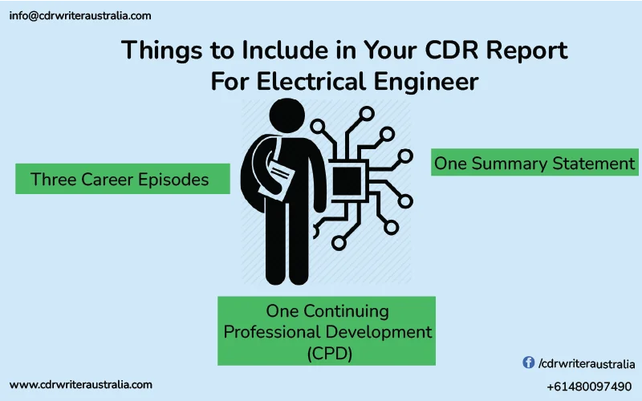

An engineer's preferred location for employment and travel in Australia because it is one of the countries where immigrant professionals can earn high salaries. Engineers must go through the EA evaluation process. You must obtain a CDR report for Australian immigration and submit it to EA, the organization in charge of overseeing the Professional Engineers Assessment procedure. To obtain a visa for skilled migration in Australia, CDR reports are essential. It is crucial for the applicants to discuss and emphasize their competencies in each project or episode. The best method to understand the format and get a good sense is to look through CDR samples. Engineers with impressive resumes and qualifications may also be denied a visa if their CDR report writings are not appropriate, which causes the EA to reject their CDR.
What Is Electrical Engineering?
Electrical engineering is a field of engineering that deals with the study, design, and application of electronic devices for the production, transmission, and control of electrical energy. It also involves the development of electronic devices and systems for the use of electrical energy in various types of applications. Additionally, many industries require the expertise in electrical engineering in areas such as construction, manufacturing, and telecommunications industries. It leads to further increase in the need for qualified electrical engineers in Australia.
CDR Report for Electrical Engineers
The Engineers Australia conducts a CDR evaluation on electrical engineers, who are from non-accord countries or whose university is unaccredited, but they wish to advance their careers in Australia. The post of Electrical Engineer is open to engineers with a four-year Bachelor's degree in Electrical Engineering. Our team of qualified engineers and professional writers have a reputation of compiling authentic CDR Samples for Electrical Engineers, which have high chances of approval. It includes all the necessary documents such as three Career Episodes, Continuing Professional Development, Summary Statement and more. These sample reports in the link have already been submitted and approved by the Engineers Australia for a Skilled Migration Visa. For the occupation code: Electrical Engineers’ ANZSCO code is 233311.
Fromat of the CDR report for Electrical Enginners
The (Competency Demonstration Report) CDR Report for Electrical Engineers contains a curriculum vitae, three career episodes, a summary statement, and information on continuing professional development. The CDR Report Sample's content is as follows:
1. Curriculum Vitae
A well-written Curriculum Vitae with a straightforward explanation of the educational background, professional experience, accomplishments, ambitions, and certifications will impress Engineers Australia. If you need help, we at CDR Writer Australia can walk you through the process of writing a professional resume.
2. Sample of Continuing Professional Development
The technique of updating your EA assessors on your engineering career's most recent advancement is known as continuing professional development. All of the knowledge and abilities you have gained during your academic career will be taken into account during CPD report writing. Continuing Professional Development report acts as a connecting point for all of your engineering-related personal development techniques, theories, and strategies. Developing your professional networks and contacts through continuing education might also help you get more attention in your field. The CPD section of your CDR report writing is crucial since it details all of your talents in the engineering area that you have chosen to declare.
Electrical Engineer Career Episode Report Sample – one:
MATLAB Simulation of Solar PV Array and Pumped Hydro Plant, 2080 words. The author had to do the following:
- Solar PV module construction is carried out in MATLAB.
- The system's output properties were examined using the simulation.
- Hydropower plant design is done in MATLAB.
- The characteristics of hydropower are being studied using simulations.
- To look at the characteristics of characteristic curves and how they are affected by changing environmental factors like temperature and irradiation.
- To look into how PV modules behave when they are partially shaded.
Electrical Engineer Career Episode Report Sample – two:
A total of 2100 words are devoted to the phrase "Master Plan and Feasibility Study on Power Distribution System Extension and Reinforcement in Canon Valley." He performed the following duties and roles for the project:
- To ascertain the condition of the valley's energy transmission system operated by the Electricity Authority.
- To address the transmission of power's challenges.
- To understand the challenges that cause the lossless transmission challenge.
- To look into and suggest ways to improve the system now in order to reduce losses.
- To use resources as efficiently as feasible in the context of distributing power.
Electrical Engineer Career Episode Report Sample – three:
The best distribution of static and reactive power support for enhancing power system security is discussed in a 2100-word document. The following were his tasks and obligations:
- Create a mechanism for locating vulnerable buses and severe contingencies so that voltage-prone areas of the network may be located and reactive power support can be offered.
- To ascertain the nature and extent of the voltage problem.
- Create a less complex method for locating optimal locations in terms of integer (location) optimization.
- Create a mechanism to allocate static and dynamic VAR sources for a single situation as quickly as you can.
- Create a low-complexity method for properly allocating static and dynamic VAR sources for a variety of severe circumstances that are evaluated simultaneously.
3. Electrical Engineer Summary Statement Sample
A complete explanation of every facet of competency can be found in 1120 words. The summary statement highlights your primary engineering skills as well as your managerial traits. Your electrical engineer summary statement should be written simply for your EA assessor to understand.
To ensure that you have addressed all of the competency components for the selected occupational category, you must evaluate all three of the career episode's portions after completion. The evaluation's findings will be included in the summary statement. For reference, check out some samples for electrical engineering summary statements.
Requirement of CDR Report for Electrical Engineer
Level 1 or an Equivalent
Most jobs in this unit category demand a bachelor's degree or a higher level of education. A minimum of five years of pertinent experience and a relevant vendor certification may be used in place of the official qualification. In some circumstances, it may be important to have relevant experience and on-the-job training in addition to the official qualification (ANZSCO Skill Level 1).
Specifications of Electrical Engineer
- Electrical Design Engineer
- The Railway Signaling Engineer
- Signaling and Communications Engineer
The Skill Assessment Authority for Engineers
Engineers Australia (EA) holds the skill assessment authority for all engineers, including electrical engineers.
Gather all necessary documents and read the detailed information on the migration skills assessment page before beginning your application in the EA portal. Make sure to thoroughly read this material to ensure the best possible outcome for your assessment. We will review your application and contact you within 15 business days with a response.
What are the Job Responsibilities of Electrical Engineers?
The tasks that are performed by electrical engineers are listed below:
- Producing electric motors, components, equipment, and appliances by choosing the kind and design of circuits, transformers, circuit breakers, transmission lines, and other equipment.
- Interpreting the requirements, designs, standards, and usage of electric power equipment.
- Scheduling the supply and installation of equipment, cables, and fittings.
- Arranging and controlling the resources used to supply electrical parts, machinery, appliances, and equipment.
Conclusion:
Australian universities and exceptional professional colleges that offer electrical building courses will carefully consider the design report. Before announcing a student's admission, they carefully review technical competency reports as a critical evaluation. The EA will only evaluate the understudy's knowledge, expertise, and skills through specific reports. They will be delighted to learn that the reports are being written in accordance with EA criteria.
Therefore, your CDR Report should meet the standards of EA. You can get help from the cdr writer Australia while preparing a CDR report for an electrical engineer. We can help you with preparing the ACS RPL Report, RPEng Report, KA02 Report, and many more.